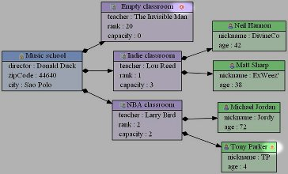
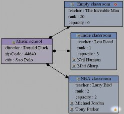
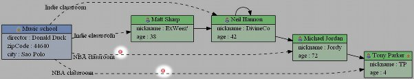

When a diagram is generated, Emf2gv optionnaly runs the EMF validation process and checks every EObject that is represented. Depending on the figure that corresponds to the EObject, an icon is added when the validation process return an error or a warning.
If the EObject is associated to a ClassFigures, the icon appears on the left of the header label :
If the EObject is associated to a RichAttributeFigure, the icon appears on the left of the attribute label :
If the EObject is associated to a RichReferenceFigure, the icon appears in the middle of the edge :
Note : if the RichReferenceFigure has a standard label (which appears in the middle of the edge), the icon is drawn on the right side of the label.